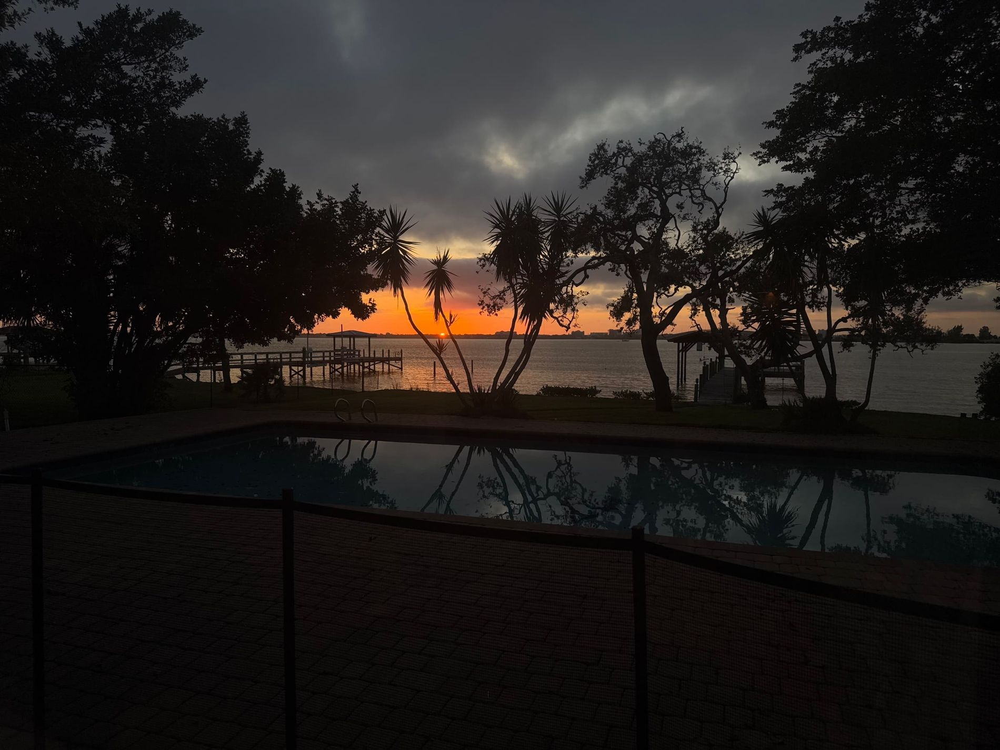

COPY PLACEHOLDER — NOT APPROVED
[HEADLINE — PLACEHOLDER, NOT APPROVED]
[SUPPORTING LINE — PLACEHOLDER, NOT APPROVED]

Call a Leak Detection Expert
(919) 633-4975
Find the leak before
it costs you more.
Wilmington pool leak detection that finds where the water is going, so the repair can be focused and unnecessary work can be avoided.
- Locating leaks since 2006
- Owner-led. No subcontractors.
CALL (919) 633-4975
REQUEST AN INSPECTION
Find the leak before
it costs you more.
Wilmington pool leak detection that finds where the water is going, so the repair can be focused and unnecessary work can be avoided.
- Locating leaks since 2006
- Owner-led. No subcontractors.
Leak Locators East Coast